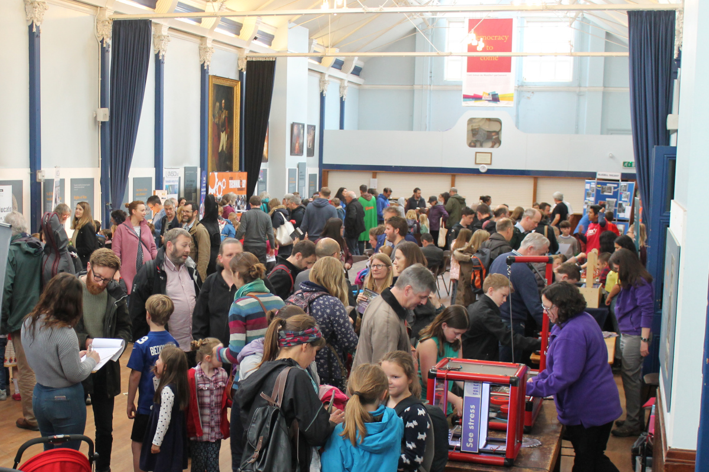
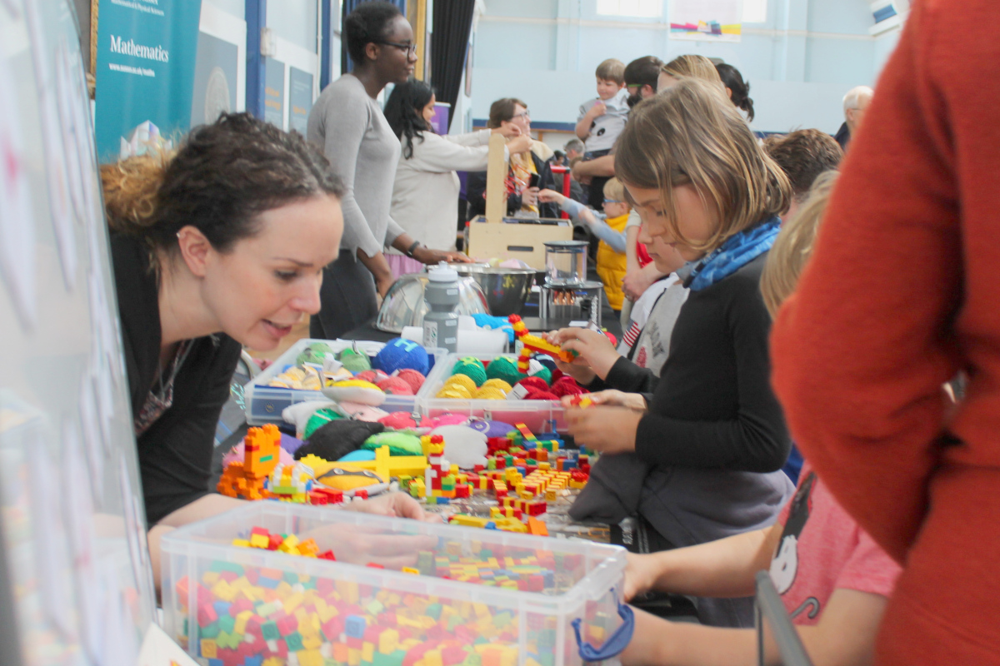

Engaging with
the Local Community
|  |
|

|
|
1,000 people attended the Lewes STEM Festival in 2018, held in the Lewes Town Hall. Not only did the event engage with the local community through providing a wide range of activities for a wide range of visitors, many of the activities were provided by volunteers from the local community, including students from the local universities to members of specialist societies in the region. |
The Brighton Luminarium will be embedded within the local community in a number of ways. School and educational groups will visit the centre daily throughout the school year, taking part in workshops that link directly to their school curriculum. Adult education courses will be offered, and community groups will also use the classrooms, with local artists providing a range of temporary exhibitions at the centre.
Local volunteers will be involved in the project from the outset, helping with the selection of artefacts for display in the Pioneer zone, and once opened, will lead tours and assist visitors around the centre, gaining valuable skills. The Astronomy and Quantum Zones will engage the local community with not only the world-leading scientists at the two Universities, but also with students studying at the Department of Physics & Astronomy at the University of Sussex, and members of local astronomy societies will also support regular public events, as they already do for events at the University of Sussex (e.g., Stargazing Live). Knowledgeable university students will also be employed over the summer to cater for the busy holiday seasons, which will greatly boost their experience and employability, especially for those interested in pursuing a career in teaching on the completion of their degrees.